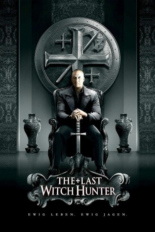
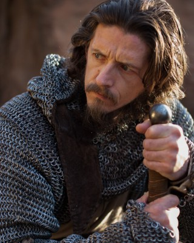
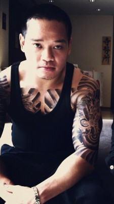

#3026 The Last Witch Hunter
 gesehen am 26.01.2016
gesehen am 26.01.2016
 
 IMDB-Wertung: 6.0 / 10
IMDB-Wertung: 6.0 / 10  Metascore: 34
Metascore: 34 
Einer der letzten überlebenden Hexenjäger der heutigen Welt, Kaulder (Vin Diesel), zieht durch die Straßen von New York, um die Erde vor einer zerstörerischen Kraft zu schützen – ausgestattet mit hilfreichen Tipps von Father Dolan (Michael Caine) und dessen Schüler (Elijah Wood), im Kampf unterstützt durch die Hexe Chloe (Rose Leslie). Der 700-jährige Kaulder und seine magisch begabte Begleiterin versuchen, den zahllosen bösen Hexen und Zauberern, die in New York unter dem Kommando einer niederträchtigen Königin (Julie Engelbrecht) ihr Unwesen treiben, das Handwerk zu legen. Denn die Unholde vermehren sich bedrohlich, nachdem sie bereits einen Großteil der anderen Hexenjäger getötet haben. Bald liegt es allein an dem ungleichen Duo Kaulder und Chloe, die wachsende Gegnerschar endgültig zu stoppen – und deren Anführerin... (www.filmstarts.de)
Jahr: 2015
Dauer: 106 Minuten
FSK: 12
Land: USA Studio: Summit EntertainmentTonspuren: DD5.1 - ,
Untertitel:
Auflösung: 1080p (1920x800) Größe: 8488 MB
Genre: Action, Abenteuer, Fantasy
Regisseur: Breck Eisner
Drehbuch: Cory Goodman, Matt Sazama, Burk Sharpless
Soundtrack: Steve Jablonsky
Darsteller:
 Vin Diesel als Kaulder
Vin Diesel als Kaulder Rose Leslie als Chloe
Rose Leslie als Chloe Elijah Wood als Dolan 37th
Elijah Wood als Dolan 37th Ólafur Darri Ólafsson als Belial
Ólafur Darri Ólafsson als Belial Rena Owen als Glaeser
Rena Owen als Glaeser Julie Engelbrecht als The Witch Queen
Julie Engelbrecht als The Witch Queen Michael Caine als Dolan 36th
Michael Caine als Dolan 36th Joseph Gilgun als Ellic
Joseph Gilgun als Ellic Isaach De Bankolé als Max Schlesinger
Isaach De Bankolé als Max Schlesinger- Sloane Coombs als Elizabeth
 Lotte Verbeek als Helena
Lotte Verbeek als Helena Dawn Olivieri als Danique
Dawn Olivieri als Danique- Inbar Lavi als Sonia
- Armani Jackson als Armani
- Aimee Carrero als Miranda
 Bex Taylor-Klaus als Bronwyn
Bex Taylor-Klaus als Bronwyn David Whalen als Council Member #1
David Whalen als Council Member #1 Jack Erdie als Council Member #2
Jack Erdie als Council Member #2- Toussaint Raphael Abessolo als Council Member #3
- Allegra Carpenter als Fatima
 Samara Lee als Little Girl
Samara Lee als Little Girl Nathan Hollabaugh als Businessman
Nathan Hollabaugh als Businessman- David Vegh als Bakery Owner
- Billy Hepfinger als Euro Witch
- Corey Rieger als Priest
- Denver Milord als A&C Soldier #1
- Bonnie Morgan als Witch Attacker #1
 Mark Steger als Witch Attacker #2
Mark Steger als Witch Attacker #2- Mark Musashi als Witch Attacker #3
 Shane Callahan als Hipster Man at Parlour
Shane Callahan als Hipster Man at Parlour- Jackson Frazer als Boy on Plane
- Zoltan Hodi als A&C Soldier #4
- James Hutchison III als A&C Soldier #5
- Casey Hendershot als A&C Soldier #7
-  Efka Kvaraciejus als A&C Soldier #9
- Jared S. Eddo als A&C Soldier #10
- Mike Mukatis als Shadow Witch #1 / Bodyguard #2
-  Jon Valera als Shadow Witch #2
- Kurt Angle als Bodyguard #4
- Mark Rademacher als Axe and Cross Elder
- John Bernecker als Witch Attacker #4
- Kaza Marie Ayersman als Cupcake Girl , uncredited
- Eric Banzon als Plant Store Healer , uncredited
- James Begert als Construction Foreman , uncredited
- Stephanie Bertoni als Wall Street Witch , uncredited
 Todd Bobenrieth als NYC Pedestrian , uncredited
Todd Bobenrieth als NYC Pedestrian , uncredited Troy Bogdan als NYC Pedestrian / Photographer , uncredited
Troy Bogdan als NYC Pedestrian / Photographer , uncredited- Danielle Brickman als NYC Fashion Show VIP Attendee , uncredited
- Jeremy Michael Burns als NYC Pedestrian , uncredited
- Momo Casablanca als NYC Pedestrian / Photographer , uncredited
Datei: X:\2015(G-M)\Last Witch Hunter, The (2015, FSK12, 1920x800).mkv seit 19.01.2016
Festplatte: HD 2015(A-Z)
 Es gibt insgesamt 129 Filme in der Gruppe '2015(G-M)'
Es gibt insgesamt 129 Filme in der Gruppe '2015(G-M)'